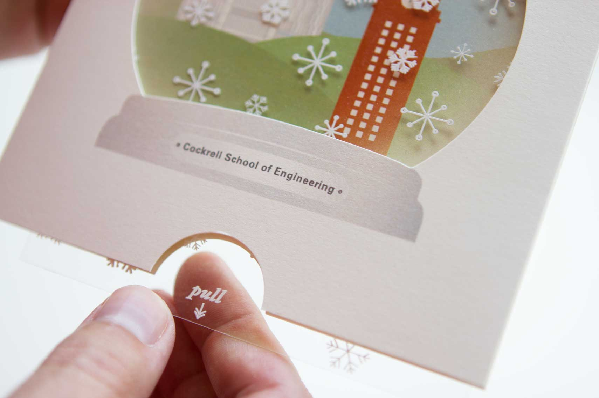
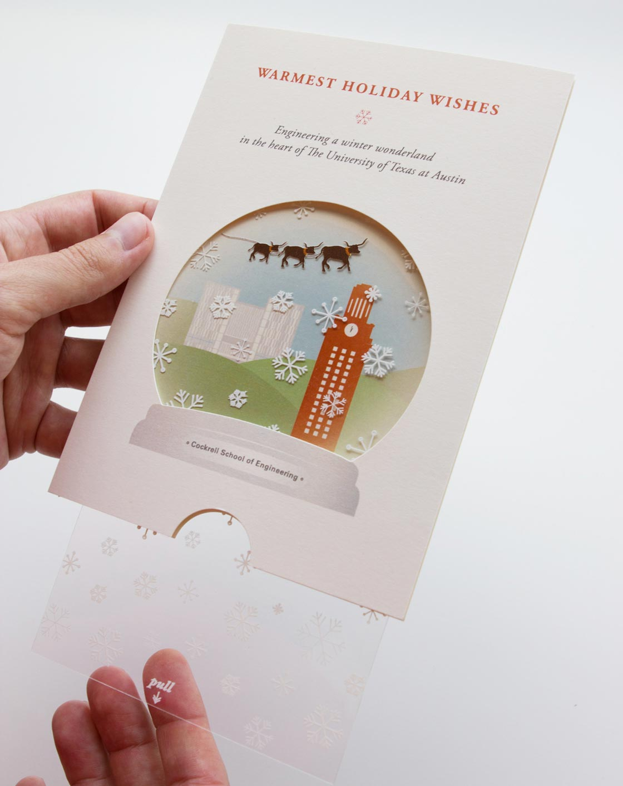

<div class="content-wrapper clearfix">

    <article class="content">

        <div class="row">
            <div class="col span_6 center">
                 <h1 class="detail">Interactive Snowglobe Card</h1>
                <div class="tagline">How do you create a memorable piece for a Texas-based audience?</div>
                

                     <br>
                <div class="tagline">Just add longhorns.</div>
                
            
            </div>     
        </div>

        <div class="row">
            <div class="col span_4">
                <h2>Summary</h2>
                <p>Each December, a small number of hand-signed cards are sent to the school's key alumni, donors and partners. These specialty cards invite the user to pull the clear plastic insert to reveal a group of flying longhorns.</p>
                <p>Inside the snowglobe, the iconic campus tower appears in the foreground with an illustration of the future engineering center on the horizon. Details about the planned complex and a link to learn more appear on the back.</p>
            </div>
            <div class="col span_2 right">
                <h2>My Role</h2>
                <ul>
                    <li>Art Direction</li>
                    <li>Illustration</li>
                    <li>Card Construction</li>
                    <li>Production</li>
                </ul>
            </div>
        </div>    

    </article>
</div>
